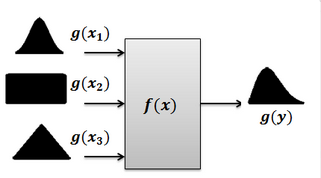

Validación de los cálculos de incertidumbre en química analítica con el método Monte Carlo. Parte I
De acuerdo al numeral 8.1 del Suplemento 1 de la guía GUM, el método de Monte Carlo es un método general para estimar la incertidumbre de medición y puede, bajo ciertas directrices, validar los cálculos realizados con el método GUM. En este post asumiremos que Ud., esimado lector, está familiarizado con el método GUM y ya lo tiene implementado , por ejemplo, en una hoja Excel y le gustaría validar sus cálculos mediante un método totalmente independiente y más general. De esta forma podrá cumplir cabalmente con el siguiente numeral de la norma 17025:
5.4.7.1 Los cálculos y la transferencia de los datos deben estar sujetos a verificaciones adecuadas llevadas a cabo de una manera sistemática.
¿Cómo sabe Ud. que su implementación en Excel está correcta?
¿Qué es el método de Monte Carlo?
(Aquí podría hacer copy-paste de Wikipedia…no olvidar borrar esta nota interna)
Muy sucintamente, el método de Monte Carlo es un método numérico que permite
evaluar expresiones matemáticas complejas (muy complejas, créame) mediante la
simulación de números aleatorios.
Este post no pretende profundizar en la teoría de este método (ZzzZzz…) , sino
más bien dar ejemplos concretos aplicados en química analítica, por lo tanto,
es posible que un avezado estadístico computacional le dé un infarto al leer la
soltura con la cual me expreso y lo ineficiente del código R. El objetivo
es simplemente la divulgación a la comunidad químico-analítica para
abordar algunos puntos normativos de la 17025 y guía GUM.
Veamos un ejemplo sencillo. Supongamos que necesitamos calcular la
incertidumbre de la
suma de 2 variables aleatorias
normales independientes, y que poseen
la misma media (\(\mu\)) y varianza (\(\sigma^2\)), es decir,
si \(Z = X + Y\) ¿Cuál es la incertiumbre de \(Z\)? (\(u_{Z}\))
Si Ud. recuerda de sus cursos de probabilidades, este problema tiene una solución directa y sencilla:
\[\begin{eqnarray} V(Z) &=& V(X) + V(Y) \\ V(Z) &=& \sigma^2 + \sigma^2 \\ V(Z) &=& 2\sigma^2 \end{eqnarray}\]
donde \(V()\) denota varianza. Por lo tanto, la incertidumbre de Z es \(u_{Z} = \sqrt{V(Z)} = \sqrt{2}\sigma\). Si Ud, conoce \(\sigma\), es decir, la incertidumbre estándar de \(X\) e \(Y\), el problema está resuelto. En realidad, este ejemplo es bastente general y las distribuciones ni siquiera tienen que ser las mismas, bajo ciertas condiciones, esto se cumplirá.
Pero supongamos que, repentinamente, Ud. olvidó todo lo aprendido en esas estimulantes clases de probabilidades con 33°C y sin aire acondicionado. No se preocupe, obtendremos la incertidumbre de Z sin recurrir a ninguna propiedad teórica de las varianzas. Usareemos el método de Monte Carlo, para lo cual debemos hacer lo siguiente:
Asigne a cada variable, en este caso \(X\) e \(Y\), una distribución de probabilidad de acuerdo a la información que disponga hasta ese momento. En nuestro ejemplo tanto \(X\) como \(Y\) son normales con la misma media (\(\mu\)) y desviación estándar (\(\sigma\)). Sin pérdida de generalidad, diremos que ambas variables \(X\) e \(Y\) son normales con media \(\mu = 100\) y desviación estándar \(\sigma = 5\).
De cada variable genere un valor aleatorio. Es decir, en nuestro ejemplo debemos generar un número aleatorio para \(X\) y otro para \(Y\) a partir de sus respectivas distribuciones de probabilidad asignadas, que en este caso es la misma. Haremos esto en lenguaje
R:
# Generamos n = 1 número aletorio para X a partir de una
# distribución Normal con media 100 y desviación estándar 5
X <- rnorm(1, 100, 5)
# Generamos n = 1 número aletorio para Y a partir de una
# distribución Normal con media 100 y desviación estándar 5
Y <- rnorm(1, 100, 5) En esta primera simulación obtuvimos \(X = 97.1976218\) e \(Y = 98.8491126\).
Calcule la variable de interés con los datos simulados. En el ejemplo, \(Z = X + Y = 97.1976218 + 98.8491126= 196.0467343\)
Repita los pasos 2 y 3 \(n\) veces y obtenga la distribución empírica de \(Z\).
A partir de los \(n\) datos simulados de \(Z\), estime \(u_{Z} = s_{Z}\), es decir, la desviación estándar muestral de los \(n\) datos.
Hay varias formas de implementar todos estos pasos
en R, la más intuitiva (creo yo) es la siguiente:
n <- 1000 # Obtendremos n = 1000 datos aleatorios para X e Y
mu <- 100 # Media mu = 100
s <- 5 # Desviación estandar s = 5
X <- rnorm(n, mu, s) # 1000 datos aleatorios de una normal con parámetros mu y s
Y <- rnorm(n, mu, s) # 1000 datos aleatorios de una normal con parámetros mu y s
Z <- X + Y # Para cada uno de los 1000 datos de X e Y, calculamos Z
uZ <- sd(Z) # La incertidumbre estándar de Z es la desviación estándar de las
# n = 1000 simulacionesEn nuestro ejemplo, la incertidumbre estándar por Monte Carlo es de \(u_{Z}^{MC} = 7.4\). ¿Qué nos decía la teoría? Que \(u_{Z} = \sqrt{2}\sigma = \sqrt{2}\cdot 5 = 7.1\)
Ojalá todo fuera tan fácil. El ejemplo era muy sencillo y la solución es conocida en forma teórica. La vida del químico analítico es extremadamente compleja (en todo $entido), y no siempre existe una solución tan simple. Para eso está el método de Monte Carlo, el cual simula un proceso complejo cuyas variables de entrada pueden tener cualquier distribución de probabilidad tal como lo muestra la siguiente figura:

La generalidad del método MC no asume normalidad de la variable de interés \(g(y)\), sino más bien la estima como una distribución empírica y a partir de ésta calcula la incertidumbre estándar y expandida.
Incertidumbre de un factor de dilución
Para aterrizar esta definición veamos un
ejemplo muy simple en química analítica
y cómo podemos implementarlo en un lenguaje de programación
especialmente dedicado a esta tareas: R. A su vez discutiremos las principales
diferencias entre el método GUM y el método de Monte Carlo
Se prepara la dilución de una muestra antes de su lectura por AAS, mediante la toma de una alícuota de 20 mL con una pipeta volumétrica cuyo volumen es \(20,0 \pm 0,1\) mL y su dilución en un matraz de 100 mL, con un volumen de \(100 \pm 0,6\) mL. Calcular la incertidumbre del factor de dilución \(f = V_{final}/V_{inicial}\)
Método GUM
Este es un ejercicio bastante simple para el método GUM, pues el factor de dilución es una operación de división, por lo que aplicando las reglas de propagación de la incertidumbre de una división, obtenemos lo siguiente:
\[\begin{equation} u_{f} = f\sqrt{\left(\frac{u_{V_{final}}}{V_{final}}\right)^2 + \left(\frac{u_{V_{inicial}}}{V_{incial}}\right)^2} \tag{1} \end{equation}\]
Asumiremos por simplicidad que las incertidumbres asociadas al material volumétrico son las indicadas por el fabricante en el mismo material, es decir, de acuerdo a la figura 1 y, por ahora, serán las únicas fuentes de incertidumbre del material volumétrico (olvidaremos la T° y la repetibilidad).

Figure 1: Incertidumbre del fabricante
Ahora bien, las incertidumbres del material volumétrico corresponden a incertidumbres expandidas \(U\), por lo tanto, debemos convertirlas a incertidumbres estándares antes de aplicar la ecuación (1). También por simplicidad, modelaremos los volúmenes mediante una distribución rectangular, por lo tanto, al estandarizar \(u = U/k\), con \(k = \sqrt{3}\) obtenemos lo siguiente:
\[\begin{eqnarray} u_{V_{final}} &=& \frac{0,6}{\sqrt{3}} = 0.35\, \text{mL}\\ u_{V_{incial}} &=& \frac{0,1}{\sqrt{3}} = 0.06\, \text{mL}\\ u_{f} &=& \frac{100}{20}\sqrt{\left(\frac{0.35}{100}\right)^2 + \left(\frac{0.06}{20}\right)^2} \\ u_{f} &=& 0.02255 \end{eqnarray}\]
En este ejemplo, podemos asumir que los grados de libertad de ambas incertidumbres tienden a infinito, por lo tanto, si queremos obtener la incertidumbre expandida del factor de dilución con un 95% de confianza, se asume un factor de cobertura \(k = 2\), de esta forma obtenemos \(U_{f} = ku_{f} = 0.04509\) mL.
Método de Monte Carlo
Implementaremos en R, los pasos descritos del método de Monte Carlo:
k <- sqrt(3) # Factor de estandarización para una distribución rectangular
vi <- 20 # Volumen inicial [mL]
Uvi <- 0.1 # Incertidumbre expandida del volumen inicial [mL]
uvi <- Uvi/k # Incertidumbre estándar del volumen inicial [mL]
vf <- 100 # Volumen incial [mL]
Uvf <- 0.6 # Incertidumbre expandida del volumen final [mL]
uvf <- Uvf/k # Incertidumbre estándar del volumen final [mL]
# Aquí haremos la simulación de Monte Carlo
set.seed(123) # Para que Ud. obtenga los mismos resultados en su simulación
# Generaremos valores aleatorios de volumen inicial y volumen final
# desde una distribución rectangular con el comando runif(n, minimo, maximo)
# minimo = volumen - U
# maximos = volumen + U
# Los guardaremos en los vectores vi.sim y vf.sim
n <- 1000
vi.sim <- runif(n, vi - Uvi, vi + Uvi)
vf.sim <- runif(n, vf - Uvf, vf + Uvf)
# Ahora calcularemos el factor de dilución para cada uno de los pares de
# valores de volumen inicial y final que simulamos y lo guardaremos en el
# el vector f.sim
f.sim <- vf.sim/vi.sim # Es la misma fórmula“Bueno ¿Y?” se preguntará Ud.
Veamos que hemos generado con la simulación:
- \(n = 1000\) valores aleatorios del volumen inicial a partir de una
distribución rectangular con media
vi= 20 mL e incertidumbre expandidaUvi= 0.1 mL. El promedio de los 1000 volumenes iniciales simulados es 19.999 mL y una desviación estándar deuvi= \(U_{vf}/\sqrt{3} = 0.058\) mL. La figura 2 muestra el histograma de los valores simulados. Note que la simulación concuerda perfectamente con los valores de incertidumbre informados por el fabricante (\(20 \pm 0.1\) mL).
![Histograma de los valores simulados de volumen inicial [mL]](https://www.analytical.cl/post/validacion-calculos-incertidumbre-quimica-analitica-metodo-monte-carlo/index_files/figure-html/visim-1.png)
Figure 2: Histograma de los valores simulados de volumen inicial [mL]
\(n = 1000\) valores aleatorios del volumen final a partir de una distribución rectangular con media
vf= 100 mL e incertidumbre expandidaUvf= 0.6 mL.Para cada uno de los pares datos simulados de volumen inicial y final, se calculó el factor de dilución, por lo tanto, se obtuvieron en total \(n = 1000\) factores los cuales se “guardaron” en el vector
f.sim, tal como se muestra en la tabla 1:
| vf.sim | vi.sim | f.sim |
|---|---|---|
| 99.73 | 19.96 | 5.00 |
| 100.11 | 20.06 | 4.99 |
| 99.59 | 19.98 | 4.98 |
| 100.42 | 20.08 | 5.00 |
| 100.42 | 20.09 | 5.00 |
| 99.97 | 19.91 | 5.02 |
- La figura 3 muestra el histograma de los 1000 factores de dilución simulados:

Figure 3: Histograma de factores de dilución simulados
“¡Qué interesante!”, dirá Ud., la división de dos variables rectangulares genera una distribución de datos que, al menos, es simétrica. ¿Es razonable asumir una distribución normal del factor de dilución simulado? Si recuerda la discusión en este post, podemos evaluar la admisibilidad de esta hipótesis mediante el análisis gráfico QQ-Plot de normalidad de los datos simulados y el test de Shapiro, el cual se muestra en la figura 4.

Figure 4: QQ-Plot de normalidad de los n factores de dilución simulados
Shapiro-Wilk normality test
data: f.sim
W = 0.99005, p-value = 2.719e-06Aparentemente, el modelo normal sería razonable para modelar el factor de dilución sino fuera por los siguientes hechos:
El histograma del factor de dilución tiene “colas livianas”, lo cual se puede advertir en el QQ-plot de normalidad en los valores extremos.
La evidencia del test de Shapiro en contra de la hipótesis de normalidad.
Y lo más importante, la razón de dos variables independientes rectangulares (uniformes) teóricamente no es Normal (está demostrado).
Ok, probablemente esta discusión no sea de mucho interés por ahora, pero nos dará pistas para dirigir la discusión posterior.
Entonces ¿Cómo obtenemos la incertidumbre del factor de dilución por el método de Monte Carlo?
Muy sencillo, a partir de la desviación estándar de los factores de dilución simulados, es decir, \(u_{f}^{MC} = 0.02302\). Como podrá advertir, es muy similar a la obtenida por el método GUM \(u_{f} = 0.02255\), la diferencia relativa es de un 2.1 %. Es más, ajustando a las cifras significativas correctas se obtiene la misma magnitud 0.02
¿Queda validado el método GUM con los cálculos del método de Monte Carlo? Desde el punto de vista metrológico químico: Sí. Desde el punto de vista numérico: Depende.
Lo que sucede es que el numeral 8.1 del suplemento 1 dela guía GUM es explícito en establecer un criterio de aceptación entre el método GUM y el método de Monte Carlo (MC):
\[\begin{eqnarray} |y - U(y) - y_{low}| &<& \xi \\ |y + U(y) - y_{high}| &<& \xi \end{eqnarray}\]
donde \(y \pm U(y)\) es el valor calculado de la variable y su incertidumbre expandida estimada por el método GUM; \(y_{low}\) e \(y_{high}\) corresponden a los percentiles 2.5 y 97.5 de los datos simulados, es decir, el intervalo de incertidumbre al 95% de confianza calculado por el método de Monte Carlo. \(\xi\) es la tolerancia numérica entre ambas metodologías de cálculo. Es decir, es un test de precisión numérica, no metrológica.
El valor de \(\xi\) está relacionado las cifras significativas que tienen sentido físico-químico y metrológico. Por ejemplo, si para una gravimetría usamos una balanza granataria cuya incertidumbre es del orden de \(\pm 0.1\) g, no podríamos elegir una tolerancia numérica de \(0.00001\) g. Para establecer \(\xi\) la guía indica lo siguiente:
Exprese \(u(y)\) en notación científica manteniendo las cifras significativas. En nuestro caso obtuvimos \(u_{f} = 0.0225\), la cual puede ser redondeada a una cifra significativa \(u_{f} = 0.02\). Esta incertidumbre, entonces, se expresa como \(2 \cdot 10^{-2}\).
Para obtener \(\xi\), utilice el exponente de la potencia de 10 (t = -2) del paso anterior, en la siguiente expresión:
\[\begin{eqnarray} \xi &=& \frac{1}{2}\times 10^{t} \\ \xi &=& \frac{1}{2}\times 10^{-2}\\ \xi &=& 0.005 \end{eqnarray}\]
¿Cómo obtenemos los percentiles 2.5 y 97.5 de la simulación de Monte Carlo?
Muy sencillo, con el comando quantile:
Esto quiere decir, que de los \(n = 1000\) datos simulados del factor de dilución, un 95% se encuentra dentro del intervalo [4.96, 5.04]. La figura 5 muestra este intervalo en el histograma de los datos simulados:
hist(f.sim,
xlab = 'Factor de dilución',
main = '',
freq = T,
breaks = 20,
xlim = c(4.93, 5.07))
abline(v = quantilos[1], col = 'red')
abline(v = quantilos[2], col = 'red')
Figure 5: Intervalo de confianza al 95% de los datos simulados del factor de dilución
Por lo tanto, sólo nos queda calcular \(U(y)\) que es la incertidumbre expandida del factor de dilución calculada por el método GUM. De acuerdo a la guía \(U = k\cdot u\), donde \(k\) es el factor de cobertura para obtener un intervalo de incertidumbre con cierto grado de confianza. Aquí es donde la guía GUM asume, bajo ciertas condiciones (ver numeral G.2.3), que la variable de respuesta, en este caso factor de dilución, puede aproximarse a una distribución Normal donde \(k \approx 2\). Advierta que para nuestro ejemplo esta suposición no tiene mucho asidero. Por lo tanto, siguiendo las directrices de la guía GUM \(U_{f} = 2\cdot 0.023 = 0.05\).
Con todos los datos estimados, llevemos a cabo el test de validación entre el método GUM y el método de Monte Carlo:
\[\begin{eqnarray} |5 - 0.045 - 4.957| &<& 0.005 \\ |5 + 0.045 - 5.043| &<& 0.005 \end{eqnarray}\]
En ambos casos \(0.002 < 0.005\), por lo tanto, el método GUM queda validado
Insisto con lo del mago Tamariz: ¡chiararáaa!
Observaciones:
Si bien en este ejemplo sólo utilizamos \(n = 1000\) simulaciones, en la práctica se requieren muchas más (\(10^{5} - 10^{6}\)). El suplemento 1 de la GUM entrega más directrices en este tema.
Mientras mayor sea el grado de no linealidad de la ecuación de medición, más divergencias habrá entre GUM y MC. Siendo este último el de mayor generalidad.
Si bien se puede implementar Monte Carlo en Excel, es una tarea bastante engorrosa pues debe programarlo en Visual Basic. Le sugiero utilizar lenguajes de programación más modernos como
RoPython, los cuales tienen librerías especializadas en métodos de simulación.A mayor asimetría de la distribución empírica, mayores diferencias habrá entre ambos métodos.
Dé un sentido químico a la simulación ¿Recuerda que la pureza química no es Normal? Intente con la distribución Beta la cual es más apropiada para modelar pureza.
En este post hemos validado el método GUM frente a Monte Carlo “a mano”, es decir,
hemos hecho el test en forma manual. En el
próximo post utilizaremos
la librería metRology la cual incorpora la validación de GUM con MC en un
único comando GUM.validate… ¡y listo!.
Hasta la próxima.
Bibliografía
Evaluation of measurement data – Guide to the expression of uncertainty in measurement JCGM 100:2008
Evaluation of measurement data – Supplement 1 to the “Guide to the expression of uncertainty in measurement” – Propagation of distributions using a Monte Carlo method JCGM 101:2008
Stephen L R Ellison metRology: Support for Metrological Applications R package version 0.9-23-2, 2016.
Carlos Gómez
Gestor de Calidad de Billetes & Monedas
Metrólogo Químico con experiencia en la aplicación de métodos estadísticos modernos en Química Analítica.